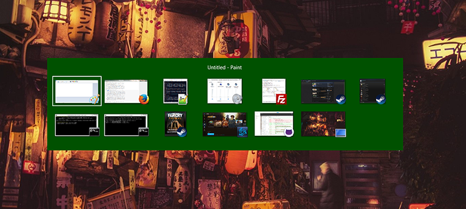

Typical Appearance & Behavior
The task switcher can come in many forms, and is very dependent on the system, but there are three main appearances which exist on modern desktop OS’s . The first, and most important, is the task bar, or tray. This is a list of pictures of each application, which is always on the bottom or side or the screen. Each picture can be clicked on to toggle that task being opened or hidden, and often users can alternate click on the tasks to open up a menu with additional options, including ending tasks. The second common appearance is a hotkey which opens a temporary window showing all the open tasks. The specifics of this vary by system, but the hotkey is often good for switching between two Windows, or other tasks using the keyboard only and not the mouse. Most systems also have a third window which gives more technical information on tasks. This is called Task Manager on Windows and Activity Monitor on Mac. This window can usually be opened with a keyboard shortcut and gives performance and resource usage information on individual tasks. Tasks can be terminated from this window, including tasks which are not responding and cannot be closed normally.
Events
Task switcher events are fairly simple. The task switcher is either onscreen or offscreen.
And there is usually a hover
event when each task is selected, followed by a select even when the task is selected. Then, of course,
there is a task switch event when switching to the new task. There is also possibly the appearance of an
options menu event from an alternative click and a preview event from a long hover.
Variants
These three versions are especially apparent on modern versions of Mac and Windows. Ubuntu has adopted a similar taskbar and “system monitor”. Also Mac OS has a desktop switcher which can switch between multiple virtual populated desktops, instead of individual tasks. Also it is important to mention that task switchers on mobile OS’s are very different for each platform, and do not look the same as on desktops. The taskbar and task manager have been around a very long time and are on most previous versions of Windows and OSX. Hotkey task switching behavior is a more recent development.
Component in Action
Priority Metrics
The taskbar is the most used method to switch tasks, and it is very easy to learn. The user simply needs to click on the picture of the task they wish to switch to, though it is a little less obvious that using an alternate click on any given task will open more options. The task switcher hotkey is more difficult to learn. Firstly, the user may not even know that this method exists, and if he/she does, must first discover the hotkey. Even then it takes a bit to get used to the single button control, and the user will likely take a few tries to switch the wanted task. The task manager is a bit more complicated as it shows more detailed statistics and information which the user may not understand. There is also the same issue of finding how to get to the task switcher in the first place. However, the most common use of the task manager, force ending a task, is fairly easy to learn, as there is usually an obvious button. Learnability is important, but assuming a user will be using any given OS multiple times, learnability is only an issue at the outset and is not as important as efficiency, which will always be a concern.
All three versions of task switchers should be very efficient. There are little to no intermediate states between the user and his/her goal. That being said, each of the three versions is more efficient for different things. The task bar is the generally most efficient as it is always on screen (if not auto-hidden) and shows all tasks in one view. The hotkey is most efficient for switching back and forth between two tasks, and is also the best solution to switching out of a fullscreen application, where the taskbar is hidden. The task manager is not very efficient at switching tasks, neither is it the most efficient at closing tasks, because it takes time to come up and navigate to the wanted task, however it is the most powerful, and must be used when the other methods are not working. Because the task switcher is so often used, efficiency is the most important metric.
The taskbar should have few errors as it is fairly simple. However, users could often accidentally open a pinned task by misclicking, or accidentally close or switch away from a task they want open. The hot key has the error or hitting the key too many or few times, and therefore switching to the wrong task. The task manager takes more effort to open and I cannot think of any regularly occurring errors. Errors are definitely a concern for any given task switcher, each common error is a decrease in overall productivity.
All three versions of the task switcher should be easy to remember. They are all fairly simple mechanisms, and they always function the same no matter what or how many tasks are open. There should be no issue with memorability. I cannot think of any non-deterministic task switcher which would be particularly difficult to remember, as long as it is not overcomplicated, this should not be an issue.
If any usability metric is least important for a task switcher, it is probably satisfaction. The action of switching a task speaks for itself and there is little need for feedback other than to do its job quickly and efficiently. If the other metrics are satisfied for any given task switcher, satisfaction will follow.
Key Characteristics
I think the important characteristics for a task switcher are illuminated by the above overview of usability metrics. A good task switcher should be firstly efficient. The user should be able to switch to any given task with as few clicks as possible, and the switching action should be quick, avoiding unnecessary transitions or animations. It should also be unobtrusive, reasonably easy to learn, certainly easy to use, and should work the same no matter how many, or what type of, tasks are active.
A good task switcher should be easily accessible from any screen or program, and should be able to move between any needed task or kill a task without having to stop and think about what they're doing. common features include a representation of the icons and/or previews of the various tasks and a button to end them. Also optionally multiple instances of the same task could be embedded or overlayed and some information or metrics can be shown on various tasks.
State Diagram

Task switcher states depend on the functionality of the switcher, but as a general overview we can say that there a few different states. Task not-running, Task running & active, Task running & non-active, and Task selected in task switcher, Task options panel selected in task switcher. It is important to note that, in the taskbar or tray, tasks which are not currently running can still be pinned, and selected, opened, or shown options.
Platform-Specific Instances
The three versions of the task switcher that I have mentioned are present on Windows 8.1. There is also a “Switch list” feature as part of Windows 8’s “Hot Corners” but I will not be covering that as it is horrible and I have it disabled. I will cover the other three in specific detail.
The taskbar is pretty standard; apps can be pinned for quick access, and can be opened, closed and switched at ease. Hovering over an app opens a live preview of it above the taskbar. Hovering over the preview brings up a full size preview of the window or app. Apps have an options menu accessed by right clicking on them and the taskbar itself also has its own options menu accessed by right clicking on a blank spot. There is also the Windows logo in the corner which opens the start menu, and on the other side of the task bar is a clock with the date, and also a notification area, where system settings, such as wifi, sound levels, and power settings, can be accessed along with hidden apps such as graphics settings, and apps which do not appear on the main taskbar, but are docked, and still running.
The Microsoft windows dev guidelines state "The taskbar is the access point for programs displayed on the desktop. With the new Windows 7 taskbar features, users can give commands, access resources, and view program status directly from the taskbar. The taskbar is the access point for programs displayed on the desktop, even if the program is minimized. Such programs are said to have desktop presence. With the taskbar, users can view the open primary windows and certain secondary windows on the desktop and can quickly switch between them."

The hotkey in Windows 8.1 is alt+tab. This opens a temporary interface where lives preview screens of the apps are visible including window titles. Pressing alt+tab once will switch back and forth between the most recent opened app. Apps can be cycled through by each press of tab while holding alt, if held on one app, the the window will open in a full scale preview. Once the user lets go of alt, the selected app is switched to.
The task manager in Windows 8.1 can be accessed by selecting it from a menu accessed through the hotkey ctrl+alt+del. It can also be accessed through a menu option by right clicking on the taskbar. Although it was available in previous versions of Windows, task switching is not a main function of the task manager in Windows 8.1. It is primarily for ending tasks and obtaining application and system performance information.

Credits
Written by Flanders Lorton 2015. Embedded video is original content.